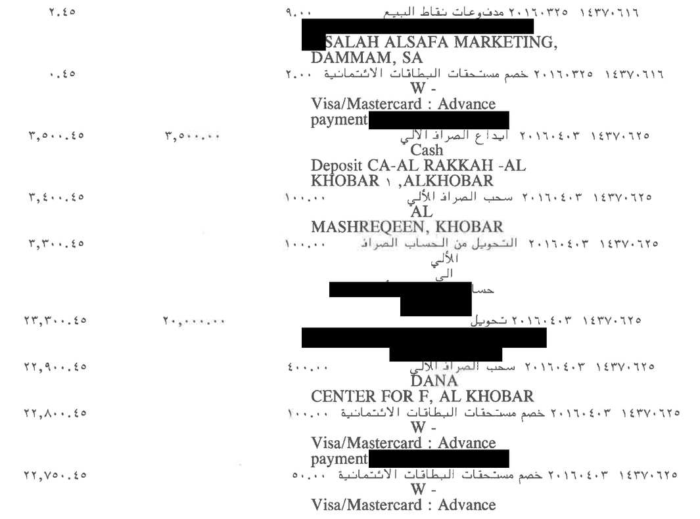

تعذّر تحميل الأرقام. أعد تحميل الصفحة.
هل يطابق هذا المبلغ؟
صفٌّ من صفحةٍ ممسوحة في كشف حسابٍ حقيقيّ، كما قرأه النظام. الرصيدُ قبله مع حركته يجب أن يساوي الرصيدَ بعده. خمّن أولًا: هل يستقيم الحساب؟
اكشف الجواب
أمسكت السلسلةُ هذا الخطأ، فعُرض الصفُّ للمراجعة قبل أن يدخل أيَّ مجموعٍ أو جواب.
لماذا يصعب هذا الملفّ على ما تعلّمناه
قارئُ الصور يخطئ أحيانًا، وقارئُ هذا النظام منها، والصفُّ أعلاه من أخطائه. والمهمُّ أن يُعرف موضعُ الخطأ.
والكشفُ صورٌ ممسوحة، بلا طبقة نصٍّ تحتها، وأرقامُه هنديّة، ووصفُ الحركة يمتدّ أسطرًا تحت مبلغها.
-
- لذلك: لا شيء في الجواب وحده، صحيحًا كان أو خاطئًا، يقول أيَّ رقمٍ فيه يُوثق به. فأضفنا حَكَمين يراجعان كلَّ رقم.
حَكَمان يراجعان كلَّ رقم
هذه صفوفُ الصفحة نفسها كما طُبعت. وحُجبت أسماءُ الأشخاص وأرقامُ الحسابات والبطاقات، وقُصّ رأسُ الصفحة وذيلُها.

القراءة
نموذجُ رؤيةٍ يقرأ كلَّ صفٍّ، والرقمُ الهنديُّ يصير رقمًا يُحسب به.
| البيان | المبلغ كما قرأه النظام | الرصيد | السلسلة |
|---|
السلسلة
كلُّ رصيدٍ يساوي الرصيدَ قبله زائدًا الإيداعَ أو ناقصًا السحب. فإن طابق ثبت الصفّ، وإن خالف وقف الحسابُ عنده وعُرض الصفُّ للمراجعة.
التذييل
في ذيل كلّ صفحةٍ مجموعٌ تراكميٌّ مطبوعٌ للمدين والدائن. والنظامُ يقابله بمجموع فروق الأرصدة التي قرأها، فيراجع عمودَ الأرصدة من خارج السلسلة.
أرقامُ هذا القسم وما قبله من صفحةٍ واحدةٍ من كشف حسابٍ حقيقيّ، نُشرت بموافقة صاحبه.
على الكشف كلّه
القراءةُ نفسُها والحَكَمان نفساهما على الكشف نفسه كاملًا:
أرقامٌ إجماليّةٌ من قراءة الكشف نفسه كاملًا. ومصدرُها لقطةُ الأرقام المحروسة في المستودع، وهي نفسُها في التقرير.
اسأله: الأدواتُ تحسب
الوكيلُ لا يجمع بنفسه. يستدعي أدواتٍ تحسب من دفتر SQLite الذي أثبتته السلسلة: المجموعُ والعدّ، وأعلى رصيدٍ وأدناه، وملخّصُ الصفحة، والبحثُ في البيان. وحين لا يجد جوابًا يقول ذلك.
- الكشفُ الممسوحصورٌ بلا طبقة نصّ
- قارئُ الصفحاتنموذجُ رؤيةٍ عبر OpenRouter مباشرةً، خارج LangChain
- الحَكَمانالسلسلة والتذييل
- الدفتر
SQLite - وكيلُ LangChain
create_agentو@tool: أدواتٌ تحسب من الدفترFAISS: استرجاعٌ بمرشّح الصفحةChatPromptTemplate: قالبُ التلقينresponse_format: جوابٌ منظَّمSqliteSaverوtrim_messages: ذاكرةُ الحوار
- الجوابمع موضع كلّ رقم
قارئُ الصفحات وحده خارج LangChain بقرارٍ مقيس: الطلبُ الذي يبنيه غلافُها يختلف عن الطلب الذي قيست عليه القراءة (القياس).
الحدود
- المدعومُ الآن كشوفُ مصرف الراجحي الممسوحةُ وحدها، ولا يُفتح بنكٌ آخر قبل أن يُؤهَّل.
- القراءةُ الحيّةُ لكشفك بمفتاح OpenRouter الخاصّ بك وحده، وما يُحفظ ومتى يُحذف مكتوبٌ في «قاعدة الخصوصية» داخل التطبيق.
- الصفُّ الذي لا يُثبته الحساب يُعرض عليك لتحكم فيه. القارئُ الأخيرُ إنسان.
جرّبه بنفسك
زرُّ التجربة يفتح التطبيق على كشفٍ اصطناعيٍّ صنعناه لهذا الغرض، مقروءًا مسبقًا: تصفّح صفوفه واسأل دفتره، بلا مفتاحٍ وبلا كلفة.
جرّبه على عيّنةٍ تجريبيّة